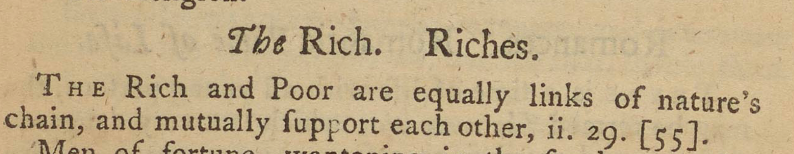

Richardson also broke up similar topics over multiple headings in order to guide the reader to certain conclusions or topics. In the Pamela section, for instance, there are multiple sections on poverty. If a reader were to look under ‘Po’ for Poor or Poverty they would find a section entitled Poor not to be despised by the Rich, a section aimed at the wealthy, rather than the poor. The book thus guides the reader towards a specific moral ‘instruction’ that is not necessarily directly in line with their original search.
We also see that there are similar quotations and sentiments across the many topics that address social class directly. From the section on Low Life, we find the quotation:
In the section on The Rich,, we find a similar quotation:
Ostensively, because it is an important ‘moral’ addressed in the original novel, the book offers the reader multiple paths through which to reach it.
We can see a similar case in the Grandison section. Likely because a critique of duelling is so central to the novel, Moral Sentiments includes three separate topics on duelling: Challenges, Duelling, and Fencing. By breaking a singular topic into multiple headings, dispersed throughout the Grandison section, Richardson increases the likeliness of a reader finding (and reading) its moral lesson.
{Return to Tour Table of Contents}